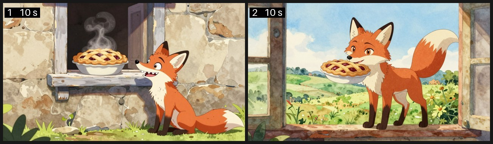

A look first: the plan and the stills
1 min 51 sStills cost seconds and clips cost minutes, so stop after the stills and look. --name picks the video’s folder; without it the video is named from its title. Every path vh prints is inside ~/videoharness. The run ends by naming one sheet with every first frame on it: open that in any picture viewer, or look on the Videos tab of videoharness’s page.
$ vh make "A fox steals a cooling pie from a farmhouse windowsill and gets away with it. 2D watercolor animation." --seconds 20 --name fox-pie --until stills == plan gemma4:31b on <your Ollama server> ... The Pie Heist (2 shots, 20 s) look: 2D watercolor animation with soft edges, warm sunlight, and a palette of earthy oranges and rustic creams. cast: Fox: A slender red fox with a white-tipped tail, black paws, and bright amber eyes. cast: Pie: A golden-brown lattice-top fruit pie in a white ceramic dish. 1 10 s medium shot, eye level still: A rustic stone farmhouse wall under a bright midday sun. A white wooden windowsill holds the Pie, with thin wisps of steam rising from the crust. The Fox is crouched on the grass below, looking up at the windowsill with a wide, hungry grin and dilated pupils. motion: The Fox leaps upward and lands softly on the wooden ledge. He gently grips the edge of the ceramic dish with his teeth. The camera pans up to follow the Fox's jump. sound: Birds chirping, soft wind, and a light 'clink' of ceramic on wood. 2 10 s wide shot, low angle still: The Fox stands on the edge of the windowsill, holding the Pie in his mouth. He is positioned against a background of a green rolling meadow and a clear blue sky. His tail is curled upward in excitement. motion: The Fox jumps down from the ledge into the tall grass. He trots quickly away from the house toward the horizon. The camera tracks the Fox's movement as he disappears into the greenery. sound: Soft thud of paws hitting grass and the sound of rustling foliage. videos/fox-pie/plan.json (28 s, one pass) == stills 2 to draw, 0 already there (1344x768) [1/2] shot 1 127.0.0.1:8189 69 s [2/2] shot 2 127.0.0.1:8189 14 s 1 seed 101 videos/fox-pie/stills/shot-01.png 2 seed 102 videos/fox-pie/stills/shot-02.png all on one page: videos/fox-pie/stills/sheet.jpg fox-pie: made as far as the stills in 1 min 51 s

~/videoharness/videos/fox-pie/stills/sheet.jpg: every shot’s first frame on one sheet, with its number and length.